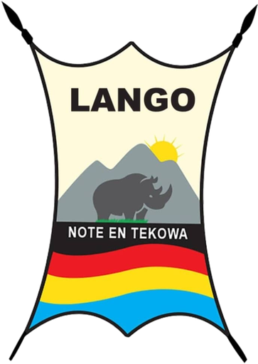

MyCulture App
One app for every tribe in UgandaInvestor summary
November 2026 · Kakebe Technologies Limited
Culture · Language · Data
One app for Uganda's languages and cultures.
MyCulture works today for Lango, its model community, is built for Acholi, and is designed so that any other community can be added without starting again. Together they become a national home for language, heritage and cultural data: the local data Ugandan languages need before technology can understand them.
2,800+dictionary words, searchable offline
25clans with their totems and prohibitions
10districts and cities documented
30heritage entries, each with sources
2communities built: Lango live, Acholi ready for review
The problem
Uganda recognises 65 indigenous communities and has about 41 living languages. Most of that knowledge is spoken, not written: when elders pass away it goes with them, children learn in English, and AI and translation tools barely understand Ugandan languages. Africa has more than 2,000 languages, and most have almost no localised digital data.
What we built
A free mobile app, website, admin system and open data API that document, teach and share a community's culture in one trusted place. Anyone can contribute; language experts and clan leaders review before anything is marked verified.
Learn
Dictionary, translator, proverbs, phrasebook, word of the day, quizzes.
Belong
Clans, districts, notable people, history, timeline and heritage sites.
Listen and read
Radio, podcast, events, news and the Bible, all in one app.
Contribute
Add words, photos and stories, even offline, and follow them through review.
Nothing is "verified" until an expert says soEvery photo and source creditedThe community keeps its rights
Who it is for
Communities and cultural institutions
Children and young people
Learn the mother tongue and their clan in a form they enjoy.
Elders and clan leaders
Record and verify what they know; guard what is sensitive.
Cultural institutions and chiefdoms
A trusted digital archive they review and the community owns.
The diaspora
A way home for Ugandans abroad: language, clan and place.
Institutions and partners
Schools, teachers and curriculum bodies
Mother-tongue material with sources, for lessons and quizzes.
Government ministries and agencies
Culture, education, ICT: a national repository and evidence for policy.
Universities, researchers and AI teams
Reviewed, consented language data through an open API.
Tourism, media, NGOs and development partners
Heritage, festivals and stories, accurately told and credited.
MyCulture App
One app for every tribe in Uganda
Investor summary
November 2026 · Kakebe Technologies Limited
The national plan
One platform for every tribe, and a national data repository.
The platform is built once; each community's content sits beside it. A new community is created in the admin panel, filled and reviewed by its own editors, and switched on when ready. People choose their community at sign-in; translation and word comparison work across communities.
Layer 3
National hub (next)Search across communities, a national dictionary and heritage atlas, an open data portal and AI services.
Layer 2
Each communityDictionary, clans or chiefdoms, districts, heritage, people, history, quizzes, radio and more: written and reviewed by its own editors.
Layer 1
Built onceMobile app, website, admin and review system, open API, offline use, Google sign-in.
Communities
Lango (the model) Live
Acholi Built
Next communities
Acholi goes live once Acholi speakers have reviewed it.
Use cases
Schools and learning
Lessons and quizzes with sources. NCDC (2025) recommends 26 languages for lower primary, Leb Lango included.
Children
Word of the day, short quizzes, stories, points and streaks: language and clan in a form children enjoy.
National data repository
One reviewed register of languages, clans, districts, heritage and people, open to researchers by API.
Translation
English, Leb Lango and Leb Acholi today (words, set phrases). Next: sentences, speech, more languages.
Heritage and tourism
Sites, ceremonies, crafts and festivals made visible and protected, each with its credit.
Language data for AI
Verified words, sentences and recordings become a community-owned dataset for AI tools.
Leb Langopii
↔
Englishwater
↔
Leb Acholipi
Translation across Uganda, then East Africa. Between two community languages the app pivots through English and calls the result a likely equivalent until experts confirm it. Public AI language-data projects for Uganda name only a few languages (Luganda, Runyankore-Rukiga, Lumasaba, Acholi); most, Leb Lango included, are missing. We gather that data, community by community.
The road ahead
Now · 2026Proof
Lango, the model community, live at myculture.online; Android app in Play testing; Acholi built.
Next 12 monthsLaunch and pilot
Launch Lango and Acholi publicly; sentence translation, recordings, a schools pilot, three more communities.
Draft: about UGX 1.05 bn (USD 286k)
Years 2 to 3National rollout
All 65 communities with their own editors; national hub, heritage atlas, open data portal.
Draft: about UGX 9.5 bn (USD 2.6M)
BeyondEast Africa
Languages that cross borders: the Luo family (Lango, Acholi) reaches South Sudan and Kenya. Start with partner institutions.
How it can sustain itself (proposed)
Public programmesCulture, education and ICT agencies, and curriculum bodies.
Schools and trainingLicences for mother-tongue learning in schools.
Language data servicesLicensed data and translation, with consent and a share back.
Grants and givingGrants, CSR and diaspora giving; a donation page is built in.
What we are looking for
Seed investment and partners for the next 12 months: a ministry or curriculum-body pilot, a university data partner, and a mobile-network or media partner for reach.
Kakebe Technologies Limited
Lira City, Uganda
Sedrick Otolo, Director
0777 676 206 · ot.sedrick@gmail.com
myculture.online